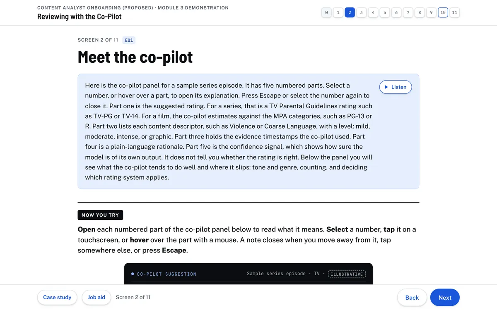

Scenario-based technical training
Reviewing with the Co‑Pilot
A narrated simulation that teaches content-rating analysts to check an AI co-pilot's suggested age rating and content descriptors before a title is published, then choose and justify a review action.
- Project type
- Scenario-based simulation with scored practice
- Audience
- Content-rating analysts, new and tenured
- My role
- Gap analysis, objectives, scripting, assessment design, build, QA
- Status
- Independent work sample
- Problem
- When an AI tool drafts the rating, the analyst's job shifts from writing a rating to checking one, and people tend to accept confident machine output without opening the evidence.
- Deliverables
- 12-screen narrated HTML module, six-case scored review queue, rationale rubric, ten-item targeted practice set, printable job aid, design document and evaluation plan
- Tools
- Hand-coded HTML, CSS, and JavaScript built with Claude under my direction; ElevenLabs text-to-speech for narration; automated browser tests
- Standards used
- U.S. TV Parental Guidelines; MPA Classification and Rating Rules (rev. July 24, 2020)
What this is. An independent work sample, prepared for an instructional designer role on a streaming Trust and Safety team. It is one completed module (Module 3) of a proposed five-module onboarding curriculum. No company commissioned, reviewed, or approved it, no analysts have piloted it, and no performance results exist. Titles, scenes, and co-pilot output are invented; the rating definitions come from the published guidelines.

The problem
Rating tools can now draft the age rating, the content descriptors, and the supporting timestamps before an analyst presses play. That changes the work. The analyst reviews a finished-looking answer, and checking is a different skill from authoring. Without practice, reviewers drift toward accepting confident output, a pattern known as automation bias, and quality can fall even as throughput rises.
Three errors matter most in this task: accepting a descriptor without opening the cited moment, misjudging context or frequency (tone, genre, a sustained sequence versus a single moment, rules that turn on count), and applying the wrong rating system. A fourth problem sits downstream: override notes vary in quality, which makes them hard for QA to audit.
AssumedThese gaps come from a desk analysis of the role description and the published rating rules. No organization supplied error data, and the module says so on its first page.
Constraints
- Rules had to be real enough to transfer to the job, while every title and scene had to be fictional.
- The module could not represent any company's proprietary tools or policies, so the co-pilot interface and review workflow are labeled as illustrative.
- No LMS: the module runs as a standalone HTML file and records nothing.
Analysis
I started from the task the analyst performs once a co-pilot is in the loop and broke it into the checks a reviewer has to make before acting on a suggestion. That produced four verification checks, which became the spine of the module and of the job aid:
- Evidence. Does each cited moment support both the descriptor and its level?
- Context. How do tone, genre, realism, and duration change the reading?
- Count. Do frequency or persistence change the result? Some MPA rules turn on how many times something appears.
- System and policy. Which rating system applies to this title and version, and does an additional review rule apply?
I then separated three layers of content and labeled each one in the module: the published rating systems (quoted or paraphrased, with source links), synthetic practice material, and an illustrative workflow (the four review actions, QA sampling, and a fictional "Training Market X" review rule).
A proposed stakeholder map identifies who would review what in a real deployment: Policy for answer keys, Operations and QA for measures, Product for the tool walkthrough, Science for error patterns, and analyst representatives for pilot readiness. PlannedNone of these reviews has happened.
Objectives and alignment
The terminal objective has two parts. Decision accuracy: given six synthetic titles with AI-suggested ratings, the analyst chooses the correct action, final rating, and publication status in at least five of six cases. Rationale quality: for each decision, the analyst selects the supporting evidence and policy, and for overrides and escalations writes a claim, evidence, and policy rationale. A critical safety rule sits on top: any decision that lets a title publish when a hold is required fails the assessment.
| Objective | Screens | Practice | Assessment evidence |
|---|---|---|---|
| EO1 Explain what the co-pilot produces, what its confidence signal means, and where it errs | 1–3 | Annotated co-pilot panel | Formative knowledge check on Screen 3 |
| EO2 Verify that each descriptor and level is supported by the cited moment | 4 | 12 evidence items, marked supported or not | Evidence selections in the queue, credited only when every essential log entry is cited |
| EO3 Apply context, count, and rating-system rules | 5–7 | 6 context scenes, 6 counting examples, 13 system items | Policy selections and final rating in the queue |
| EO4 Choose accept, modify, override, or escalate | 8 | 4 decision-tree cases | Action and publication status against the key |
| EO5 Write a claim, evidence, and policy rationale | 9 | Rationale builder with a transparent rubric | Self-comparison with a model answer |
| EO6 Recognize when a decision needs Policy | 8, 10 | Escalation cases in the queue | Escalation choice plus the hold gate |
Design decisions
-
Score the decision and the reasoning separately
- Design challenge
- An analyst can land on the right action for the wrong reason. A single score would hide that, and an early draft claimed to measure rationales it did not actually check.
- Decision
- Split the terminal objective into decision accuracy and rationale quality, and make each case ask for the action first, then the evidence and policy that support it.
- Rationale
- The job asks for a defensible call, and QA audits the note as much as the rating. Assessing them apart shows whether the learner can apply the criteria or only recognize the right answer.
- Implementation
- Action, rating, and hold are scored against a key. Evidence earns credit only when every essential log entry is cited and nothing irrelevant is. Written rationales are compared with a model answer, and the Screen 9 checker flags gaps with a keyword-and-timestamp rubric that always calls for human review.
- Limitation
- Written rationales are not machine-graded. In a deployment, QA reviewers would score a sample against the same rubric.
-
Make the publication hold a pass/fail gate
- Design challenge
- During review I found a learner could escalate "The Old Flag" correctly, leave it set to publish, and still pass with six of six.
- Decision
- Count publication status as part of the decision and fail any attempt that lets a held title publish, whatever the overall score.
- Rationale
- Some errors are more costly than others. Averaging a safety failure into a percentage would teach that it is one mistake among many.
- Implementation
- The results screen reports a correct escalation with the wrong publication status separately from a wrong action, so the learner sees exactly which part failed.
- Evidence
- Documented in the module's revision table as a change made after the designer's own review round.
-
Teach the four checks one at a time, then combine them in a queue
- Design challenge
- A full review case asks the learner to juggle evidence, context, count, and system rules at once, which is a lot for someone new to the rating systems.
- Decision
- Give each check its own screen with focused practice (Screens 4 to 7), introduce the four actions on Screen 8, and only then open a six-case queue that requires all of them.
- Rationale
- Part-task practice builds each judgment before the whole task, and the queue mirrors how the work arrives on the job: a list of titles, each with a suggestion to verify.
- Implementation
- The queue has a case menu with status, one case per panel, and results that link each missed pattern back to the screen that teaches it. A targeted-practice screen draws ten items from the patterns the learner missed.
- Limitation
- Six cases cannot show calibration. The evaluation plan calls for confidence tracking across many more decisions.
-
Build on published rating systems, with every invented element labeled
- Design challenge
- An early version used a made-up rating standard, which would not transfer to real work. Using a real company's policies was not an option.
- Decision
- Rebuild on the TV Parental Guidelines and MPA rules, keep all titles and scenes synthetic, and mark the illustrative workflow wherever it appears.
- Rationale
- Analysts can check the rules against the source, and the skills of verifying evidence against a written standard carry over to any proprietary policy.
- Implementation
- Every rule card links to its official source. Illustrative elements carry an "Illustrative" label. An AI-drafted practice item that stated an MPA rule too absolutely was corrected to name the Rating Board's two-thirds special-vote exception.
Design and development
The module's documentation lays out ten steps from needs analysis through revision and marks each one as done, partly done, or planned. Done for this sample: the gap analysis, objectives, screen-by-screen outline and narration script, design system, build, and the designer's own review rounds. Partly done: program sequencing (five modules outlined, one built). Planned: stakeholder review, pilot, and measurement.
I used Claude to produce the module and its revisions under my direction, and ElevenLabs for narration. Because the module teaches people to catch confident AI errors, the drafting workflow had the same check built in: every AI-drafted rule was compared word for word with the published source before it went into practice.
Revisions from review rounds
These came from my own review passes. No external reviewers were involved.
| What I found | What changed |
|---|---|
| Narration was audio only | Every screen opens with the narration as text, with an optional Listen button |
| Hard to tell where instructions end and the activity begins | A "Now you try" divider, plain directions, and bolded action words |
| Too much text beside the co-pilot panel | Explanations moved into numbered notes that open on hover, keyboard focus, or tap |
| Not enough practice | 12 evidence items, 6 context scenes, 6 counting examples, 13 system items, 4 decision-tree cases, 10 targeted items |
| Some policy statements too absolute, such as the MPA profanity rule | Exceptions named, sources updated to official pages, illustrative rules labeled |
| Evidence credit given for citing one of several essential moments | Credit requires every essential log entry, and feedback names any that are missing |
Selected design artifacts
- Design documentation (opens in a new tab)
Scope, objectives, the ten-step process, stakeholder map, and evaluation plan, with each step marked as done or proposed.
- AI-assisted scenario QA example (opens in a new tab)
A sample prompt, an AI draft, and the five corrections made in review, including an invented NC-17 threshold that was removed. The prompt and draft are illustrative; the corrections are real.
- Verification job aid (opens in a new tab)
The four checks, four actions, rating levels, and the rationale format on one printable page, so the module's structure stays with the analyst after training.
The finished module
Twelve screens plus optional targeted practice, estimated at two to three hours (not yet timed with users). Each screen opens with its narration as text and an optional audio track. Learners meet the co-pilot panel, work through each check with immediate feedback, then clear a queue of six titles, choosing an action, a final rating, the evidence, the policy, a publication status, and a confidence level for each.


Evaluation
CompletedReview and testing of the module itself
- Policy statements checked against the published TV Parental Guidelines and MPA rules; corrections are listed in the module's QA table.
- Designer review rounds, with each finding and change documented (see the table above).
- An automated browser test suite, described in the module documentation. The test report is not published in this repository.
ProposedEvaluation in a deployment
The plan below has not been run. No learner data or results exist.
| Measure | How it would be collected | When |
|---|---|---|
| Rating accuracy before and after training, by error pattern | Blind samples of each new analyst's reviews, scored by QA | Week 1, then weeks 2 and 6 |
| Time to competency | Certification date against start date | At certification |
| Evidence-verification behavior | Tool logs of evidence clicks before submit | Weekly, first 8 weeks |
| Rationale quality | QA rubric on a sample of overrides and escalations | Monthly |
| Escalation accuracy | Policy disposition of each escalation; QA audit for misses | Monthly |
| Confidence against accuracy | Confidence rating logged with each decision | Per practice set, then monthly |
Status and lessons
Status. Complete as a demonstration module. Modules 1, 2, 4, and 5 exist only as outlines in the design document. Answer keys were approved by me; in a real program, Policy would sign off.
What the module does well. It assesses the call and the reasoning separately, it treats a safety failure as a failure, and it keeps a clear line between published rules and illustrative workflow.
What remains untested. Seat time, item difficulty, and whether practice on six titles changes how analysts behave in a live queue. A pilot with a small analyst group would answer the first two; the evaluation plan addresses the third.
What I would do next. Run stakeholder review on the answer keys, pilot with analysts, flag items that strong performers miss, and grow the tagged practice library so targeted practice has more to draw on.